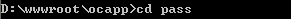
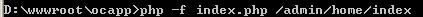
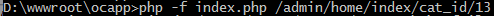
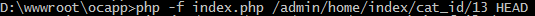
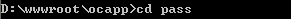
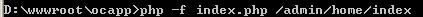
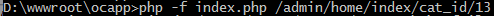
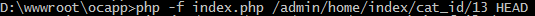

PHP命令执行
1、PHP命令执行
PHP命令执行，是指使用PHP命令方式执行PHP文件或Ocara应用，也可用于定时命令。
执行步骤：
（1）执行某个控制器动作
下面以默认的控制器动作为例，不需要传递路由参数，对于其他的动作请看下面的第2大点。
（a）切换到网站根目录
 （b）执行index.php访问默认控制器动作
（b）执行index.php访问默认控制器动作
 （2）执行一个特定的文件（pass目录）
Ocara框架提供了可以绕过入口文件index.php的访问方式，称为通道方式，具体实现的是pass目录。
该目录在开始新建应用时没有自动生成，需要手动在根目录新建。
其中的文件，可以直接执行，不会受到框架入口任何限制，还可以在其中用Invoke调用框架任意控制器动作。
（a）切换到pass目录

（b）执行其中的PHP文件
2、传递参数
默认的控制器动作只要按照上面第（1）小点执行命令，但是其他的控制器动作执行时，要传递该控制器动作的路由参数。
具体地，执行步骤同上，只不过在执行index.php时，要传递路由参数。
以下实例假设存在admin模块home控制器的index动作，执行步骤如下：
（a）切换到网站根目录
（b）执行index.php访问控制器动作

如果要带上cat_id参数:

如果要虚拟出HTTP方法（用于Restful）：

（2）执行一个特定的文件（pass目录）
Ocara框架提供了可以绕过入口文件index.php的访问方式，称为通道方式，具体实现的是pass目录。
该目录在开始新建应用时没有自动生成，需要手动在根目录新建。
其中的文件，可以直接执行，不会受到框架入口任何限制，还可以在其中用Invoke调用框架任意控制器动作。
（a）切换到pass目录

（b）执行其中的PHP文件
2、传递参数
默认的控制器动作只要按照上面第（1）小点执行命令，但是其他的控制器动作执行时，要传递该控制器动作的路由参数。
具体地，执行步骤同上，只不过在执行index.php时，要传递路由参数。
以下实例假设存在admin模块home控制器的index动作，执行步骤如下：
（a）切换到网站根目录
（b）执行index.php访问控制器动作

如果要带上cat_id参数:

如果要虚拟出HTTP方法（用于Restful）：
